Virtual box Installation and Ubuntu OS Setup
Virtual Box link: https://www.virtualbox.org
To download latest VirtualBox 6.1.6 platform packages, https://www.virtualbox.org/wiki/Downloads
To download older versions,
https://www.virtualbox.org/wiki/Download_Old_Builds_6_0
https://www.virtualbox.org/wiki/Download_Old_Builds_5_2
I have downloaded Virtual Box v5.2 Windows Hosts based exe file.
Download Ubuntu Desktop image from, https://ubuntu.com/download/desktop
Incase of you want to download previous versions of Ubuntu, then click on https://ubuntu.com/download/alternative-downloads and Check for "Past releases and other flavours".
Example: http://releases.ubuntu.com/16.04.6/
Under Desktop image click on 64-bit PC (AMD64) desktop image to download the iso file which we will use for installation in virtual box. http://releases.ubuntu.com/16.04.6/ubuntu-16.04.6-desktop-amd64.iso
Screenshots for reference
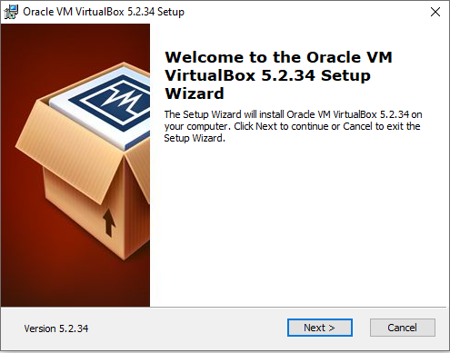
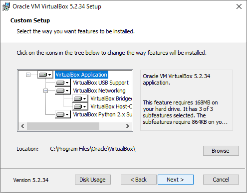
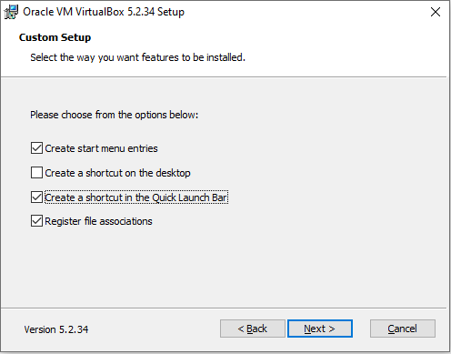
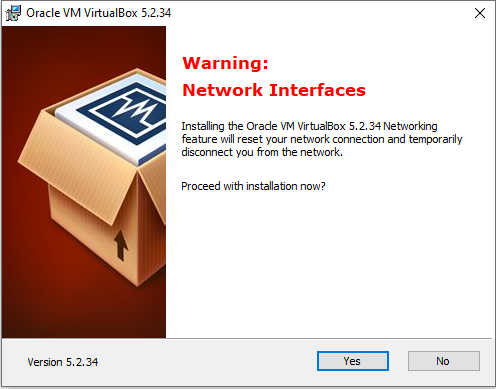
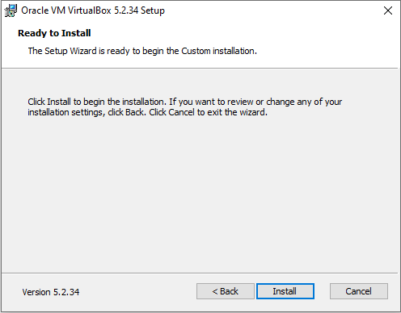
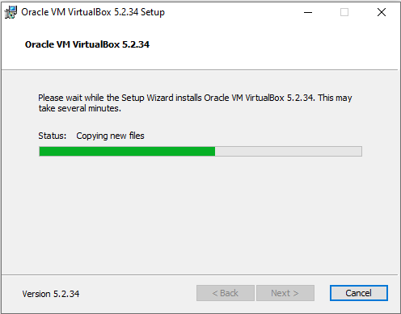
Once the Virtual box opens up, click on New and then enter required details.
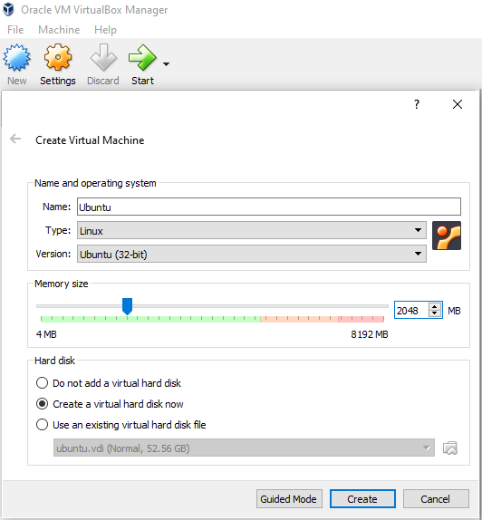
Select the second option as VHD Virtual Hard disk.
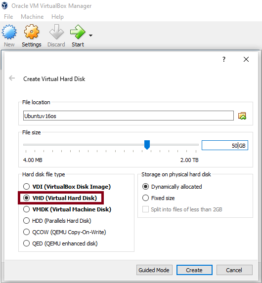
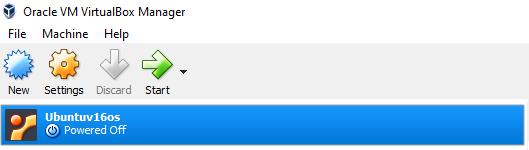
Select the Storage and then Click on empty and then click on Otical Drive symbol.
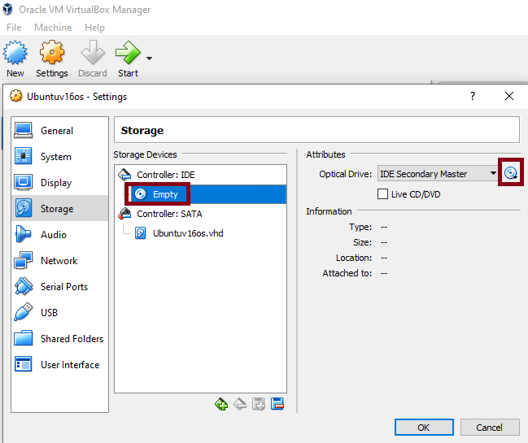
Point to the downloaded Ubuntu OS image and then follow the next set of Installation steps.
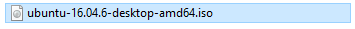
Click on Start to proceed with Installation of Ubuntu OS in Virtual Box.
Click on Install Ubuntu
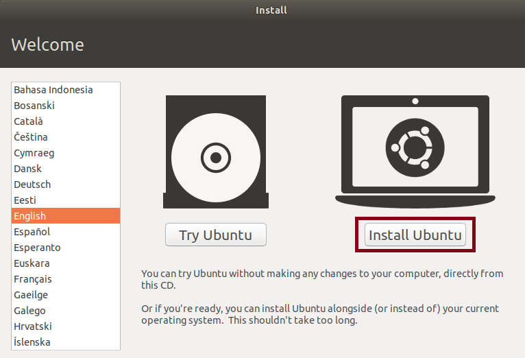
1. Select keyboard layout and continue.
2. Select "Normal installation" and continue.
3. For "Installation type", click on "Erase disk and install Ubuntu"
4. Click on Continue
5. Click on India location and Continue
6. Enter your credentials and click on Continue
7. We will see Ubuntu OS getting installed. Once it goes successful, click on Restart now.
Back to Home